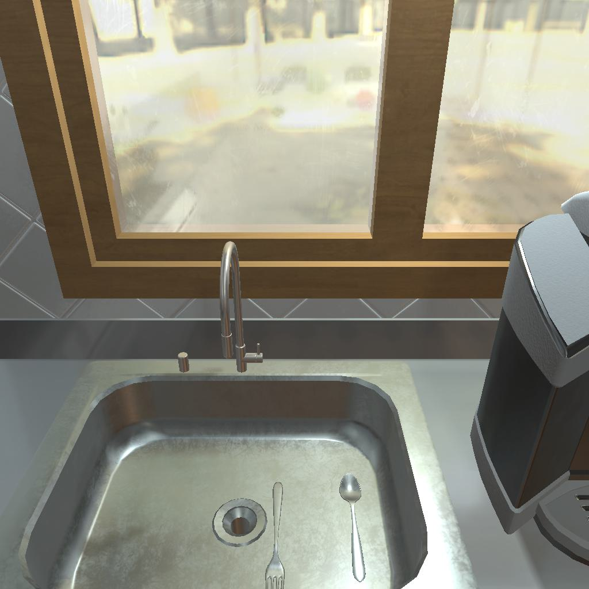

---------------------------------------------------------task: 21---------------------------------------------------------
--------------------------------------------------------------------------------------------------------------------------------------------------------------------
--------------------------------------------------------------------------------------------------------------------------------------------------------------------
Step:--------------------------------------------------------------------------1-------------------------------------------------------------------------------
----------------------------------------
VLM Prompt:
Image1:
Image2:
**Instruction**
1. Analyze the provided images to identify all visible household objects and compare the difference between images (e.h. whether the object is opened or not and taken on hand or not), focusing on those relevant to the task description "put a hot cup in countertop."
2. Use the analysis of images and the task hint "The agent must find an object of the desired type, pick it up, go to a microwave, heat the object with the microwave, then find the correct location to place it, and put it down there. The agent does not need to use the microwave button or open the microwave to heat the object, and the agent just needs to do action that is "heat the object with the microwave"." to answer the question: what is the most reasonable action in the choices for the task description "put a hot cup in countertop"?
3. Decide and write the answer using the template: The answer is: (i): , where i is the real number. If there is no desired object in images, search every place based on **Initial Observation** to find the object. And if no one is exactly correct, choose a similar answer.
**Initial Observation**
You are in the middle of a room. Looking quickly around you, you can see cabinet (1-6), microwave (1), countertop (1-2), coffeemachine (1), toaster (1), sink (1), sinkbasin (1), fridge (1)
**Answer Choices**
(1): go to cabinet 1
(2): go to cabinet 2
(3): go to cabinet 3
(4): go to microwave 1
(5): go to cabinet 4
(6): go to cabinet 5
(7): go to cabinet 6
(8): go to countertop 1
(9): go to coffeemachine 1
(10): go to toaster 1
(11): go to countertop 2
(12): go to sink 1
(13): go to sinkbasin 1
(14): go to fridge 1
**Answer**
Let's think step by step by following the instructions.
----------------------------------------
----------------------------------------
Original Response:
Firstly, we need to identify all visible household objects in the provided images. In both images, we can see a sink, a sinkbasin, and what appears to be a trash can or a kitchen appliance to the right. However, there is no visible cup or microwave in either image.
Since the task is to "put a hot cup in countertop," we need to find a cup, heat it in the microwave, and then place it on the countertop. The images do not show a cup, so we must search every place based on the Initial Observation to find one.
According to the task hint, the agent does not need to use the microwave button or open the microwave to heat the object. Instead, the action is "heat the object with the microwave". So, the first step is to find a cup.
None of the answer choices directly mention finding a cup, but it is reasonable to assume that a cup might be found in a cabinet or the fridge. Since the fridge is less likely to contain a cup, we should check the cabinets first.
The most reasonable action for the task description "put a hot cup in countertop" would be to first find a cup. Therefore, the answer is:
The answer is: (1): go to cabinet 1
If a cup is not found in cabinet 1, the agent would then proceed to check the other cabinets in numerical order.
----------------------------------------
----------------------------------------
>>> Refine Original VLM Response and Get Pure Action: go to cabinet 1
If a cup is not found in cabinet 1, the agent would then proceed to check the other cabinets in numerical order
----------------------------------------
-----------------------------------------------------------------
Running time: 15.35554552078247 seconds
Total Money: 10.38747
-----------------------------------------------------------------
-----------------------------------------------------------------
Text Observation:Nothing happens.
-----------------------------------------------------------------
UNSUCCEED